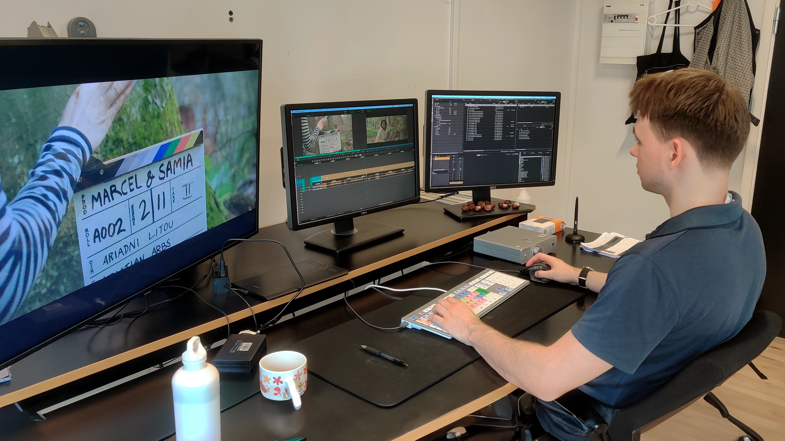

Filmklipning som Passion
Min Passion
Hvem er Bjørn?
Du har sikkert undret dig over hvad det ville sige at være
filmklipper. På denne side giver Bjørn et indblik i sin passion
for filmklipning, hvilke overvejelser man gør sig som
filmklipper, og hvorfor han syntes at det at klippe film er
sjovt. Bjørn studere til daglig filmklipning på Den Danske Film
skole, og har ydermere både været med som assistklipper, og
klipper på nogle af større danske film og tv-serier, som blandet
filmen Rose af instruktøren Niels Arden Oplev og senest
tv-serien Kald mig far instrueret af Christian Dyekjær.

Klipning er ikke bare kunst. Det er en filosofi
Min Passion.
En filmklippers verden